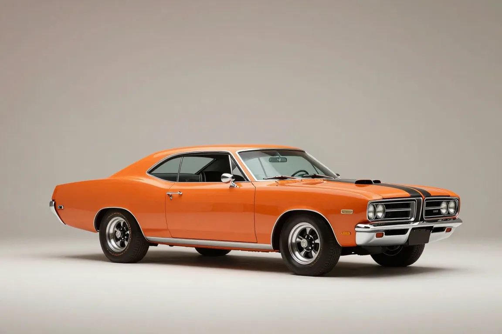

Молодое быстрое американское купе. Длинный капот, короткая задняя палуба и крыша фастбэк или с уступом. Смелая полоса, воздухозаборник на капоте, виниловые ковшеобразные сиденья и приборная панель под дерево.

Главная идея
Быстрый автомобиль для молодых и должен стоить недорого. Длинный капот над большим двигателем, короткий хвост и несколько смелых знаков на малой базе.
Принципы дизайна
Делайте капот длинным, а заднюю палубу короткой, с салоном, сдвинутым далеко назад.
Держите кузов компактным, длиной 4,6–4,9 м, с крышей высотой около 1,3 м.
Ставьте решётку со скачущей лошадью, быком или планкой и разносите фары широко.
Добавляйте смелые знаки: гоночную полосу, воздухозаборник на капоте, задний спойлер или боковые полосы.
Показывайте объём двигателя на крыле хромированными цифрами или значком.
Отделывайте салон виниловыми ковшеобразными сиденьями, диваном или консолью и приборной панелью под дерево.
Предлагайте много опций, чтобы каждый покупатель собирал машину по своему вкусу.